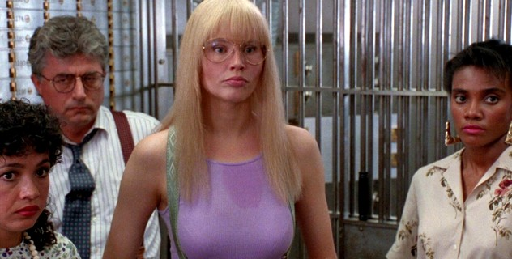

Night Deposit Bar & Grill
Kitchen till midnight
SandwichesWITH A PICKLE
Turkey & Swiss on a Kaiser
5.25
Roast breast, Swiss, iceberg, tomato, mayo and mustard. Wrapped to go.
Cheeseburger Deluxe
5.95
Half pound on a toasted bun with lettuce, tomato, onion and fries.
DessertsKIDS GET A BALLOON
Clown Cake
2.75
Jam sponge under white buttercream, with a piped face and a cherry nose.
New York Cheesecake
2.95
Dense and creamy on a graham cracker crust.
The BarTILL 2 A.M.
Bourbon Smash
4.75
Bourbon shaken hard with fresh mint, lemon and sugar, over crushed ice.
Draft Beer
2.50
A cold sixteen ounce glass.
Coffee
1.00
The million dollar cup. Bottomless.
Our regulars

Tellers and customers from the bank across the street. They eat here, and so do the cops.
To the airport
The BQE signs are down in Brooklyn. Ask the bartender before you go.
Night
Deposit
Deposit
555-0713
Prices subject to change. Party trays for 12 from 19.90Form ND-713, 1990